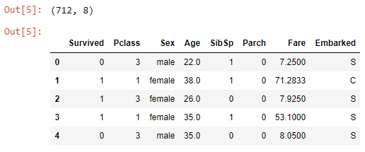
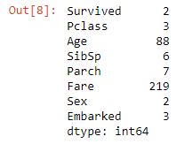
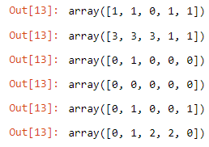
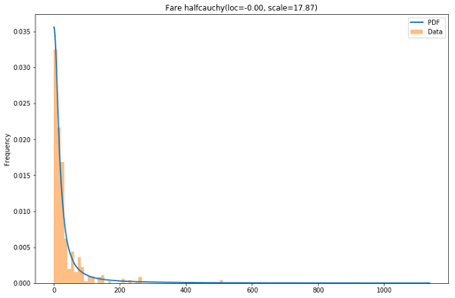
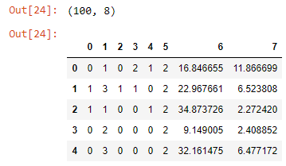

手把手：如何方便地使用Python和Pandas来匿名信息
大数据文摘
编译：毅航、胡笳、Aileen
手把手：如何方便地使用Python和Pandas来匿名信息本文阅读收获任务：与原始数据无太大差异，反映原始数据集分布删除信息唯一的列对类别进行数值编码转换 类别->数字通过从同一分布中抽样来匿名化处理名义/分类变量处理连续变量删除列名
本文阅读收获
- 每行信息唯一的列需要删除。
drop() - 通过对名称进行数值编码匿名信息（分类变量的类名，列名）。
LabelEncoder() - 分布拟合。类别数据：根据频率，创建离散概率分布。连续变量：从预定义的分布列表中确定最佳连续分布。
- 从离散和连续分布中生成数据。
- 知道了sklearn_pandas包，DataFrameMapper类。
- 转换器：LabelEncoder()，MinMaxScaler()，StandardScaler()，FunctionTransfomer()
- Jupyter notebook技巧：多个输出。
- 本文忽略了变量间的关系。
每行信息唯一的列需要删除。
drop()通过对名称进行数值编码匿名信息（分类变量的类名，列名）。
LabelEncoder()分布拟合。类别数据：根据频率，创建离散概率分布。连续变量：从预定义的分布列表中确定最佳连续分布。
xxxxxxxxxxfor c in categorical:counts = df[c].value_counts()np.random.choice(list(counts.index), p=(counts/len(df)).values, size=5)xxxxxxxxxxfrom utils import best_fit_distributionbest_distributions = []for c in continuous:data = df[c]best_fit_name, best_fit_params = best_fit_distribution(data, 50)best_distributions.append((best_fit_name, best_fit_params))# Resultbest_distributions = [('fisk', (11.744665309421649, -66.15529969956657, 94.73575225186589)),('halfcauchy', (-5.537941926133496e-09, 17.86796415175786))]从离散和连续分布中生成数据。
xxxxxxxxxxdef generate_like_df(df, categorical_cols, continuous_cols, best_distributions, n, seed=0):np.random.seed(seed)d = {}for c in categorical_cols:counts = df[c].value_counts()d[c] = np.random.choice(list(counts.index), p=(counts/len(df)).values, size=n)for c, bd in zip(continuous_cols, best_distributions):dist = getattr(scipy.stats, bd[0])d[c] = dist.rvs(size=n, *bd[1])return pd.DataFrame(d, columns=categorical_cols+continuous_cols)知道了sklearn_pandas包，DataFrameMapper类。
xxxxxxxxxxfrom sklearn_pandas import DataFrameMapperfrom sklearn.preprocessing import LabelEncoderencoders = [(["Sex"], LabelEncoder()),(["Embarked"],LabelEncoder())]mapper = DataFrameMapper(encoders, df_out=True)new_cols = mapper.fit_transform(df.copy())转换器：LabelEncoder()，MinMaxScaler()，StandardScaler()，FunctionTransfomer()
Jupyter notebook技巧：多个输出。
xxxxxxxxxx# get more than one output per Jupyter cellfrom IPython.core.interactiveshell import InteractiveShellInteractiveShell.ast_node_interactivity = "all"本文忽略了变量间的关系。
最近，我收到了一个数据集，其中包含有关客户的敏感信息，这些信息在任何情况下都不应公开。数据集位于我们的一台服务器上，一个相当安全的地方。客户敏感信息
但我想将数据复制到我的本地磁盘上，以便更方便地处理数据，同时又不希望担心数据不安全。于是，我写了一个改变数据的小脚本，同时仍然保留了一些关键信息。我将详细介绍我所采取的所有步骤，并重点介绍一些方便的技巧。改变数据，保留关键信息
任务：与原始数据无太大差异，反映原始数据集分布
我们的任务是准备一个数据集，以便以后能用于机器学习（例如分类，回归，聚类）而且不包含任何敏感信息。最终的数据集不应与原始数据集有太大差异，且应该反映原始数据集的分布。与原始数据集无太大差异 反映原始数据集的分布
动手开始吧!
我使用Jupyter notebook作为编程环境。首先，让我们引入所有必须的库。
xxxxxxxxxximport pandas as pdimport numpy as npimport scipy.stats%matplotlib inlineimport matplotlib.pyplot as pltfrom sklearn_pandas import DataFrameMapperfrom sklearn.preprocessing import LabelEncoder# get rid of warningsimport warningswarnings.filterwarnings("ignore")# get more than one output per Jupyter cellfrom IPython.core.interactiveshell import InteractiveShellInteractiveShell.ast_node_interactivity = "all"# for functions we implement laterfrom utils import best_fit_distributionfrom utils import plot_result我假设您已熟悉此处使用的大多数库。我只想强调三件事。sklearn_pandas是一个方便的库，减少了使用两个包之间的差距。使用sklearn_pandas包
sklearn_pandas：
https://github.com/scikit-learn-contrib/sklearn-pandas
它提供了一个DataFrameMapper类，使得处理pandas.DataFrame更容易，因为它可以在更少的代码行中完成变量的编码转换。DataFrameMapper类 更容易处理DataFrame
我利用IPython.core.interactiveshell ...更改了Jupyter Notebook默认配置，用来显示多个输出。这里有一篇很好的博文介绍了其他关于Jupyter的实用小技巧。Jupyter Notebook显示多个输出
最后，我们将一些代码放入一个名为utils.py的文件中，我们把这个文件放在Notebook代码文件旁边。util.py文件
Jupyter的实用小技巧：
https://www.dataquest.io/blog/jupyter-notebook-tips-tricks-shortcuts/
xxxxxxxxxxdf = pd.read_csv("../data/titanic_train.csv")
我们的分析采用Titanic Dataset的训练数据集。使用Titanic训练数据集
数据集链接：
https://www.kaggle.com/c/titanic
xxxxxxxxxxdf.shapedf.head()
删除信息唯一的列
现在我们已经加载了数据，后面将删除所有可识别个人身份的信息。列[“PassengerId”，“Name”]包含此类信息。请注意，[“PassengerId”，“Name”]对于每一行都是唯一的，因此如果构建机器学习模型，无论如何都需要在后续删除它们。删除包含个人信息的唯一的列
同样对[“Ticket”，“Cabin”]列也进行类似的操作，因为这两列对于每一行几乎都是唯一的。删除几乎唯一的列，Ticket，Cabin
出于演示方便，我们不会处理缺失值。我们只是忽略所有包含缺失值的观察结果。忽略缺失值的观察结果
xxxxxxxxxxdf.drop(columns=["PassengerId", "Name"], inplace=True) # dropped because unique for every rowdf.drop(columns=["Ticket", "Cabin"], inplace=True) # dropped because almost unique for every rowdf.dropna(inplace=True)结果看起来像这样。
xxxxxxxxxxdf.shapedf.head()
对类别进行数值编码转换 类别->数字
接下来，为了剔除更多信息，并作为后续步骤的预处理，我们将对“Sex”和“Embarked”进行数值编码转换。对Sex和Embarked进行数值编码转换
“Sex”被编码为“0,1”，“Embarked”被编码为“0,1,2”。LabelEncoder()类为我们完成了大部分工作。LabelEncoder()
xxxxxxxxxxencoders = [(["Sex"], LabelEncoder()), (["Embarked"], LabelEncoder())]mapper = DataFrameMapper(encoders, df_out=True)new_cols = mapper.fit_transform(df.copy())df = pd.concat([df.drop(columns=["Sex", "Embarked"]), new_cols], axis="columns")DataFrameMapper来自sklearn_pandas包，接收元组（tuple）列表作为参数，其中元组的第一项是列名，第二项是转换器。DataFrameMapper使用
我们在这里使用LabelEncoder()，但也可以使用其它转换器（MinMaxScaler()，StandardScaler()，FunctionTransfomer()）。转换器
在最后一行中，我们将编码后的数据与其余数据连接起来。请注意，您也可以写axis = 1，但是axis =“columns”可读性更强，我鼓励大家使用后者。
xxxxxxxxxxdf.shapedf.head()
xxxxxxxxxxdf.nunique()
通过从同一分布中抽样来匿名化
上述代码我打印了每列的唯一值的取值个数。我们假设具有少于20个取值个数的是名义变量或分类变量，具有大于等于20个取值个数的都是连续变量。假设<20取值为类别变量；>20为连续变量
我们将名义/分类变量放在一个列表中，将其它变量放在另一个列表中。将类别和连续变量分别放置
xxxxxxxxxxcategorical = []continuous = []for c in list(df): col = df[c] nunique = col.nunique() if nunique < 20: categorical.append(c) else: continuous.append(c)for c in list(df): 迭代所有列。对于list(df)，我们也可以写成df.columns.tolist()。我还是喜欢list(df)。
以下是本文的核心思想：对于每个分类变量，我们将计算其每项取值出现的频率，然后为每个取值创建具有相同频率的离散概率分布。分类变量计算频率，创建离散概率分布
对于每个连续变量，我们将从预定义的分布列表中确定最佳连续分布。我们怎么做呢？一旦确定了所有概率分布（离散和连续），我们就可以从这些分布中进行采样以创建新的数据集。连续变量，从预定义的分布列表中确定最佳连续分布 从分布中采样创建新的数据集
处理名义/分类变量
这是一个简单的例子，只用三行代码。
xxxxxxxxxxfor c in categorical: counts = df[c].value_counts() np.random.choice(list(counts.index), p=(counts/len(df)).values, size=5)
首先，我们确定变量中每个唯一值出现的频率。然后我们使用这个经验概率函数并将其传递给np.random.choice()以创建一个具有相同概率函数的新随机变量。np.random.choice()
处理连续变量
幸运的是，StackOverflow上有一个类似问题的讨论。主要解决方案如下，对于每个连续变量做如下处理：
- 使用预定义数量的区间来创建直方图
- 尝试一系列连续函数，让每个函数都去拟合该直方图，拟合过程中会产生函数的参数。
- 找到具有最小误差（最小残差平方和）的函数，该函数与该直方图将被我们用来模拟连续变量分布。
该解决方案的作者将所有内容整齐地分为两个函数。我创建了第三个函数并将所有内容放在一个名为utils.py的文件中，后面将在Jupyter Notebook中使用utils.py中定义的函数。
xxxxxxxxxxbest_distributions = []for c in continuous: data = df[c] best_fit_name, best_fit_params = best_fit_distribution(data, 50) best_distributions.append((best_fit_name, best_fit_params))# Resultbest_distributions = [ ('fisk', (11.744665309421649, -66.15529969956657, 94.73575225186589)), ('halfcauchy', (-5.537941926133496e-09, 17.86796415175786))]Age的最佳分布是fisk，Fare的最佳分布是halfcauchy，让我们来看看结果。
xxxxxxxxxxplot_result(df, continuous, best_distributions)


还不错哦。
把代码整合到一个函数中
xxxxxxxxxxdef generate_like_df(df, categorical_cols, continuous_cols, best_distributions, n, seed=0): np.random.seed(seed) d = {} for c in categorical_cols: counts = df[c].value_counts() d[c] = np.random.choice(list(counts.index), p=(counts/len(df)).values, size=n) for c, bd in zip(continuous_cols, best_distributions): dist = getattr(scipy.stats, bd[0]) d[c] = dist.rvs(size=n, *bd[1]) return pd.DataFrame(d, columns=categorical_cols+continuous_cols)现在我们有了一个函数，可以用它来创建100个新的观测值。
xxxxxxxxxxgendf = generate_like_df(df, categorical, continuous, best_distributions, n=100)gendf.shapegendf.head()
删除列名
作为后置处理步骤，还可以对连续变量进行取舍。我选择不这样做。我所做的是删除了所有列名，因为这也可能泄漏有关数据集的一些信息，简单地用0,1,2…替换它们。删除列名
xxxxxxxxxxgendf.columns = list(range(gendf.shape[1]))
最后，大功告成。
xxxxxxxxxxgendf.to_csv("output.csv", index_label="id")总结
这种方法的一个缺点是变量之间的所有交互都丢失了。例如，假设在原始数据集中，女性（Sex= 1）存活的机会（Survived= 1）比男性（Sex= 0）高，而在生成的数据集中，这个信息丢失了，其它变量之间可能存在的关系也会丢失。
我希望你发现这篇文章有用，可以在文末留言区讨论。
文中所有代码
https://github.com/r0f1/dev_to_posts/tree/master/fake_data
原文链接：
https://dev.to/r0f1/a-simple-way-to-anonymize-data-with-python-and-pandas-79g